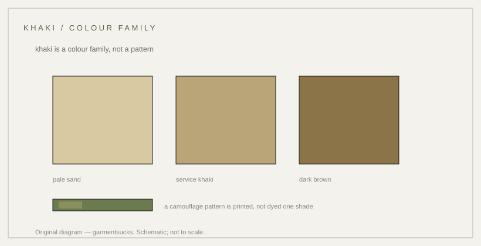

history · 1848
Khaki: the colour named after dust
Dust-coloured cloth: a word from Persian and Urdu, and a colour that spread through armies before camouflage patterns existed.
probable Published 2026-11-13 · last checked 2026-11-13

1. Summary
Khaki is a dust-coloured cloth, named from the Persian and Urdu word for dust, adopted by British Indian forces in the nineteenth century and later by armies and civilians.
The 1848 Peshawar story is repeated in secondary accounts but no primary document was opened for this card. Confidence: probable — the account is consistent across secondary sources but rests on none that was opened in full.
2. What this is
Khaki: a light brownish-yellow colour, and by extension the cotton drill or poplin cloth dyed to it. Drill: a stout cotton twill. Poplin: a lighter plain weave.
The word: khak (dust) in Persian, borrowed into Urdu; anglicised as khaki.
3. Origin and context
The standard account places khaki's adoption with the Corps of Guides on the North-West Frontier near Peshawar in 1848, under Harry Lumsden, who dressed his men in locally dyed earth-coloured cotton instead of scarlet.
It was not the first concealment uniform: rifle regiments had worn green since the late eighteenth century. Khaki's claim is narrower — a widely adopted dust-coloured service uniform, standard issue in India by 1885 and carried into the Second Afghan War.
4. How it works
A pale dust tone reflects sunlight better than a dark tunic and matches dry ground. The practical effect is twofold: less heat absorbed, and a silhouette broken against the terrain.
That reasoning is inference from the colour and climate; no opened source states the design intent as a measured finding.
5. Construction
The cloth was cotton, dyed locally at first and later industrially. Drill was the common service cloth; poplin and lighter weaves appear in later uniforms.
Dye lots vary; original khaki ranges from pale sand to a darker brown. The colour is a family, not one shade.
6. Variants
| Variant | Period | Difference |
|---|---|---|
| Khaki drill | 19th–20th c. | stout cotton twill, service dress |
| Khaki poplin | 20th c. | lighter, summer dress |
| Jungle green | WWII | green dye over khaki drill for Burma |
| Modern khaki | present | civilian chinos and workwear |
Competing accounts
Two accounts of the origin circulate: that Lumsden introduced khaki at Peshawar in 1848, and that the colour emerged gradually through Indian regiments without one identifiable inventor. The first is repeated in secondary sources; the second is an argument from the absence of a document. A regimental order or a surviving 1848 garment would settle it. The evidence currently favours 1848 as the earliest widely repeated date, not as a documented first.
| Account | Source (tier) | What it claims | Evidence offered | Weak point |
|---|---|---|---|---|
| 1848 Peshawar account | T3/T4 | Lumsden dressed the Corps of Guides in dust-coloured cloth in 1848 | secondary narratives | no primary document opened |
| Gradual adoption account | T4 | The colour spread through Indian regiments without a single inventor | absence of a documented order | argument from silence |
| Rifle green precedent | T3 | Rifle regiments wore green from the late 18th century | regimental history summaries | different colour and purpose |
7. Telling khaki from camouflage
Khaki is a solid colour, not a pattern: no printed shapes, no multiple tones. Check the weave before the shade — drill has a pronounced diagonal; poplin has a fine rib.
8. Common mistakes
Treating khaki as the first camouflage; assuming all khaki is drill; using a modern sand shade as evidence of the 19th-century colour.
9. How to read it in wear
Khaki reads as field dressing rather than uniform: a pale, dusty tone that looks worn rather than issued, which is why it moved easily into civilian wardrobe. The tone changes with light and dirt, so two garments of the same regulation shade can look like different colours in a photograph.
10. Modern designer trail
The safari jacket and chino both descend from khaki service dress; no direct-influence claim is made here. What links them is the colour and the cotton cloth, not a documented line of design.
11. Specification
Recorded statements on the left; the right column is a reproduction suggestion.
| Recorded in sources | Reproduction suggestion |
|---|---|
| Corps of Guides, Peshawar, 1848 (secondary accounts; not opened as primary) | Cotton drill, pale dust tone |
| Standard issue in India by 1885 (secondary) | — |
| Word from Persian/Urdu khak, dust (secondary) | — |
12. Questions and exercises
1) Is the khaki in front of you a solid colour or a pattern? 2) Does the cloth have a diagonal twill or a plain rib? 3) Which account of its origin does your source give?

Glossary
- Khaki
- Dust-coloured cloth; from Persian/Urdu khak.
- Drill
- Stout cotton twill.
- Corps of Guides
- British Indian regiment raised in 1846.
Sources
- [S1] [T3] National Army Museum — khaki and the Corps of Guides (not opened in full; URL not recorded)
- [S2] [T4] Secondary narratives on the 1848 Peshawar account (not opened)
- [Photo] British officer in khaki — public domain
Claims & sources
| Claim | Source | Tier | URL | Status |
|---|---|---|---|---|
| Khaki adopted by the Corps of Guides at Peshawar in 1848 | Secondary accounts | T3 | unverified (not opened as primary) | |
| Standard issue in India by 1885 | Secondary accounts | T3 | unverified | |
| Word from Persian/Urdu khak, dust | Secondary references | T3 | unverified | |
| Rifle regiments wore green from the late 18th century | Regimental summaries | T3 | partially verified (secondary) |